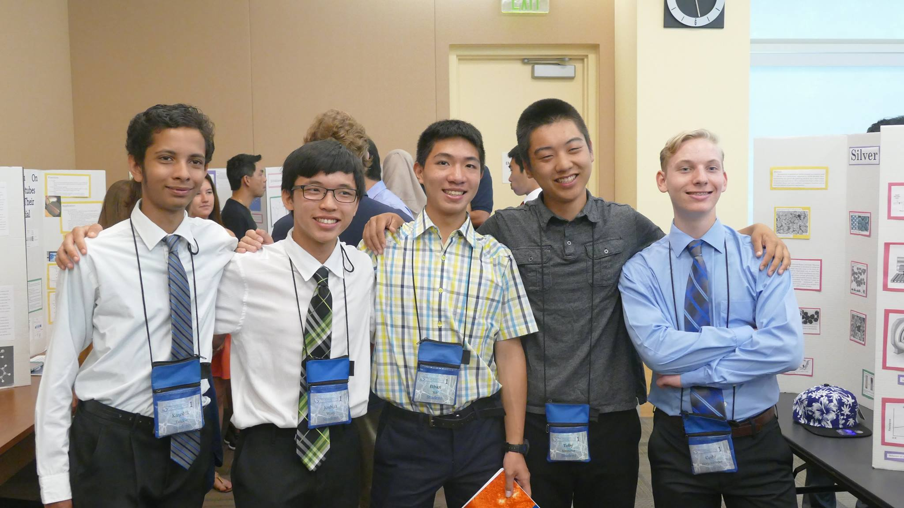

Summers
2020
I remotely interned for a Google Photos Machine Intelligence team!
2019
I interned for a Google Hotel Ads backend team in Mountain View! Google Hotel Ads displays the hotel rates in direct comparison to the online travel agencies, allowing users to directly book their hotel stays. I developed and integrated C++ code into a backend pipeline in order to determine whether user has partner app installed on their mobile device. I enabled support of new partner bid adjustment dimensions for advertisers. I developed an offline pipeline to automatically update files in Google's codebase on a daily basis. I made sure to maintain consistent latency measurements in load tests
2018
I worked for The Brane, a start-up aiming to create a platform capable of displaying all the science and technology knowledge in the world. As a knowledge graph intern, I developed a Wikipedia scraper to produce a knowledge graph for Artificial Intelligence. My python script successfully extracts important information from thousands of Wikipedia articles and classifies according to The Brane's Knowledge Classification System. The script outputs a CSV file containing nodes and links in order to create the graph structure. I expanded their database of topics by over 50%. I also recursively densified The Brane's entire database, helping create additional functionality for their platform and developed scripts to gather definitions and images for nodes.
I also worked for Seqwa, a start-up building a web-based data analytics software that processes data from various data sources and generates strategic questions along with explanatory narratives and visualizations. As a Data Science Associate, I analyzed the product for potential sources of data that would help explain how the users utilize the product. I also looked into ways to programatically generate narratives and explored competitor products.
I used this summer to learn quite a lot. Not only did I complete Physics 4B at San Jose City Community College, I also finished numerous online courses to learn foundational programming techniques and languages. I learned the fundamentals of Javascript via this Udacity course and this course. I then implemented a To-do list through WatchAndCode's Javascript course. I also explored JQuery and AJAX on Udacity.
As I am quite interested in working in data science in the future, I did some online courses to build my skillset. I completed a Coursera course to learn the basics and used Kaggle and Datacamp courses to understand how to use various libraries and tools.
2017
I developed Machine Learning (ML) content for Techlab Education, a local organization that teaches programming to high school and middle school kids. They have courses for Python, Java, iOS, Web Development, and Microcontrollers. I worked to develop content for a new course in Machine Learning. For each ML technique, I created a simulation to show how it works. I did this for Support Vector Machines, K-Nearest Neighbors, and Linear Regression. This was a good learning experience to understand the intricacies of the various techniques. I explored ways to make the content more exciting for the students.
I completed various python courses on Coursera. These include Programming For Everybody, Data Structures, and Using Python to Access Web Data. I also completed Intro to Machine Learning on Udacity.
2016
I applied my physics, chemistry, and programming knowledge while attending COSMOS at UC Davis. As part of the Quantum Physics and Applications to Nanotechnology cluster, my group made a Scanning Tunneling Microscope (STM). We worked together to wire the circuit and write the code. I was able to use the knowledge I gained from my community college physics classes. From this experience, I realized how intertwined science truly is. The complex concepts of quantum physics were understandable, even though my theoretical background was from an AP Chemistry class. Using computer science allowed us to solve complicated quantum computing problems that required higher level Calculus. I noticed that complex problems typically have a simple solution. It is important to look at the problems from multiple perspectives to find a solution.
COSMOS has also shown me how important it is to be a team player and a collaborator. My group had to work together to make the STM. In the beginning, we had designated roles, but we soon realized it was better to be more well-rounded and work on everything. I can apply this to real life as well. It is better to be adept at a multitude of things rather than specialize in only a few.
I had an unique opportunity to present at a research conference with my AP Chemistry teacher and a few other students. We presented about our year-end fact or fiction project, which was based off the movie The Martian. We explained to teachers and other educators from around the world what this project was and the research techniques we used. From this experience, I realized how truly inspiring these conferences are. I am passionate about research and wish to do more advanced research in the future.
2015
I did a statistics course at De Anza Community College and a physics course at Foothill Community College. I wanted to challenge myself by taking rigorous coursework. This was also my first experience with both of these subjects, so I wanted to learn.
I also helped out in my community. I volunteered at the Tech Museum of Innovation in San Jose where I was an Exhibit Interpreter. I helped assist guests by explaining the science and technology exhibitions. I was a member of the Volunteer Innovator Program, and helped deliver their mission of inspiring the young to become innovators in the technologies of the future. It was an interesting experience to try and explain innovative technologies to young elementary school kids who were mainly interested in the fun exhibits.
I have also volunteered for Saratoga City Council Member Rishi Kumar. My role had me collaborate and work with volunteers from other schools, in order to help my community. We wrote research reports and gave presentations in order to give others a voice about issues that affected my community. This experience allowed me to see how important cooperation and collaboration are in the real world.
2014
I completed a basic Javascript class at Foothill Community College. I had just finished Java and was interested in learning more programming to continue building my skillset. I went to VBI Debate Camp in UCLA, staying there for two weeks to be able to improve my debate skills. I gained many connections and friends during this camp. I also became a better, more persuasive speaker, and also was able to stay away from home for the first time.